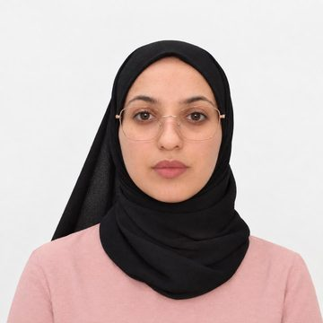

Research / SYNTERA Connect
Internet of Things
Why it matters
Billions of small connected devices sense and act in the real world. They need to be secure, lightweight and intelligent at the edge.
Key challenges
- Securing resource-constrained devices
- Intrusion detection on the edge
- Data quality across protocol stacks
- Trust, privacy and reliability of connected systems
Our approach
Cryptography and cybersecurity, adversarially robust machine learning, network protocols and reliability engineering for IoT and IoMT.
Publications
Selected publications
An IoT-aware certificateless signature scheme for protection against type-I and type-II super adversaries
Dadkhah, P.; Rastegari, P.; Dakhilalian, M.; Yeoh, P.; Wang, M.; Saremi, S.; … Gupta, B. B.
IoT, 7(2)
Cryptanalysis and improvement of the SMEP-IoV protocol: A secure and lightweight protocol for message exchange in IoV paradigm
Ghadim, G. O.; Rastegari, P.; Dakhilalian, M.; Hendessi, F.; Saremi, S.; Shibl, R.; … Nguyen, T. T.
IoT, 7(2), 31
Intrusion detection for the Internet of Medical Things: A cost-aware comparative benchmark of machine learning approaches
Ahmed, H.; Dermody, G.; Mateen, A.; Saremi, S.; Shibl, R.
Under review
Latent-space feature squeezing for adversarially robust intrusion detection on IoT edge devices
Mirzaei, M.; Saremi, S.; Khan, A.; Ahmed, H.; Rastegari, P.; Nooraei Abadeh, M.; Shibl, R.; …
International Journal of Intelligent Computing and Cybernetics, 19(4)
Protecting HWSNs from super adversaries with robust certificateless signcryption
Dadkhah, P.; Rastegari, P.; Dakhilalian, M.; Yeoh, P.; Wang, M.; Saremi, S.; Gupta, B. B.
Telecom, 7(2), 37
SELM-CTR: A stacking ensemble deep learning model with SHAP-based analysis for large-scale click-through rate prediction
Ali, Z.; Ahmed, H.; Khan, A.; Saremi, S.; Shibl, R.; Mirzaei, M.; Rastegari, P.; Wang, M.
International Journal of Intelligent Computing and Cybernetics, 19(3)
Team
Who works on this

Dr. Shahrzad Saremi
Founder · Director
 School of Science, Technology and Engineering, University of the Sunshine Coast
School of Science, Technology and Engineering, University of the Sunshine Coast
Professor Dr. Rania Shibl
Co-Director · Cofounder
Faculty of Science and Engineering, Southern Cross University, Lismore
Assoc. Prof. Dr. Dana Dermody
Cofounder · Senior Researcher
Institute of Health and Wellbeing, Federation University
Hassan Ahmed
Team Lead · Senior Researcher
 Department of Computer Science, National University of Computer and Emerging Sciences (FAST-NUCES), Chiniot-Faisalabad Campus
Department of Computer Science, National University of Computer and Emerging Sciences (FAST-NUCES), Chiniot-Faisalabad Campus
Abdullah Khan
Senior Researcher
Department of Computer Science, University of Wah, Wah Cantt
Nazmul Hossain
Researcher
 Penston Academy of International Studies, Dhaka
Penston Academy of International Studies, Dhaka
Aittezaz Ahmad
Researcher
Manar Makki Shaalan
Researcher
 University of Babylon, Babylon
University of Babylon, Babylon
Abdul Mateen
Researcher
Department of Computer Science, National University of Computer and Emerging Sciences (FAST-NUCES), Chiniot-Faisalabad Campus
Hasanga Uyanhewage
Researcher
 Tesco Mobile, Tesco UK
Tesco Mobile, Tesco UK
Malak Emziane
Researcher
 University of Tipaza
University of Tipaza